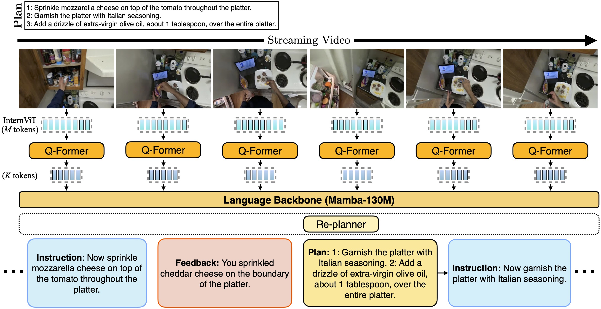

Abstract
Multi-modal Large Language Models (LLM) have advanced conversational abilities but struggle with providing live, interactive step-by-step guidance, a key capability for future AI assistants. Effective guidance requires not only delivering instructions but also detecting their successful execution, as well as identifying and alerting users to mistakes, all of which has to happen in real-time. This requires models that are not turn-based, but that can react asynchronously to a video stream, as well as video data showing users performing tasks including mistakes and their corrections. To this end, we introduce Qualcomm Interactive Cooking, a new benchmark and dataset built upon CaptainCook4D, which contains user mistakes during task execution. Our dataset and benchmark features densely annotated, timed instructions and feedback messages, specifically including mistake alerts precisely timestamped to their visual occurrence in the video. We evaluate state-of-the-art multi-modal LLMs on the Qualcomm Interactive Cooking benchmark and introduce LiveMamba, a streaming multi-modal LLM designed for interactive instructional guidance. This work provides the first dedicated benchmark and a strong baseline for developing and evaluating on live, situated coaching.
Qualcomm Interactive Cooking Dataset
Example scenarios in our streaming Qualcomm Interactive Cooking Dataset highlighting step-by-step instructions with proactive feedback messages whenever the instruction is successfully completed by the user or a mistake is made by the user.
LiveMamba: Streaming Proactive Assistant

Our LiveMamba model architecture. The input video stream is processed by an InternViT vision head which produces M tokens, and is then reduced to K tokens by a Q-Former. The language backbone produces feedback and invokes the Re-planner if necessary before the next instruction.
Zero-shot Evaluation: Qualcomm Interactive Cooking Main Set
| Instruction | Mistake | |||||
|---|---|---|---|---|---|---|
| Method | IC-Acc ↑ | Prec. ↑ | Rec. ↑ | F1 ↑ | BERT ↑ | ROUGE-L ↑ |
| LLaVA-NeXT | 1.4 | 0.00 | 0.00 | 0.00 | 0.000 | 0.000 |
| Video-ChatGPT | 1.6 | 0.00 | 0.00 | 0.00 | 0.000 | 0.000 |
| VideoChat2 | 1.6 | 0.00 | 0.00 | 0.00 | 0.000 | 0.000 |
| Video-LLaVA | 2.0 | 0.00 | 0.00 | 0.00 | 0.000 | 0.000 |
| VideoLLaMA3-7B | 1.8 | 0.00 | 0.00 | 0.00 | 0.000 | 0.000 |
| Videollm-online | 0.03 | 0.02 | 0.98 | 0.04 | 0.332 | 0.248 |
| Qwen2-VL-7B | 6.3 | 0.02 | 0.69 | 0.05 | 0.377 | 0.256 |
| Qwen2.5-VL-7B | 18.9 | 0.18 | 0.01 | 0.02 | 0.299 | 0.219 |
| Gemini-2.5-Flash | 23.1 | 0.01 | 0.22 | 0.02 | 0.410 | 0.342 |
Fine-Tuned Models Evaluation: Qualcomm Interactive Cooking Main Set
| Instruction | Mistake | |||||
|---|---|---|---|---|---|---|
| Method | IC-Acc ↑ | Prec. ↑ | Rec. ↑ | F1 ↑ | BERT ↑ | ROUGE-L ↑ |
| Main Set | ||||||
| Videollm-online† | 7.6 | 0.04 | 0.01 | 0.01 | 0.434 | 0.412 |
| LiveMamba (w/o-ICAug) | 7.8 | 0.05 | 0.01 | 0.01 | 0.605 | 0.542 |
| LiveMamba (w/o-CFAug) | 14.3 | 0.12 | 0.03 | 0.05 | 0.558 | 0.511 |
| LiveMamba (Ours) | 31.5 | 0.17 | 0.10 | 0.13 | 0.651 | 0.561 |
| Advanced Planning Set | ||||||
| LiveMamba (w/o-reP) | 10.9 | 0.38 | 0.10 | 0.16 | 0.912 | 0.901 |
| LiveMamba (Ours) | 12.6 | 0.38 | 0.13 | 0.19 | 0.941 | 0.927 |
Citation
@inproceedings{livecook,
title={Can Multi-Modal {LLM}s Provide Live Step-by-Step Task Guidance?},
author={Apratim Bhattacharyya and Bicheng Xu and Sanjay Haresh and Reza Pourreza and Litian Liu and Sunny Panchal and Leonid Sigal and Roland Memisevic},
booktitle={The Thirty-ninth Annual Conference on Neural Information Processing Systems},
year={2025},
}